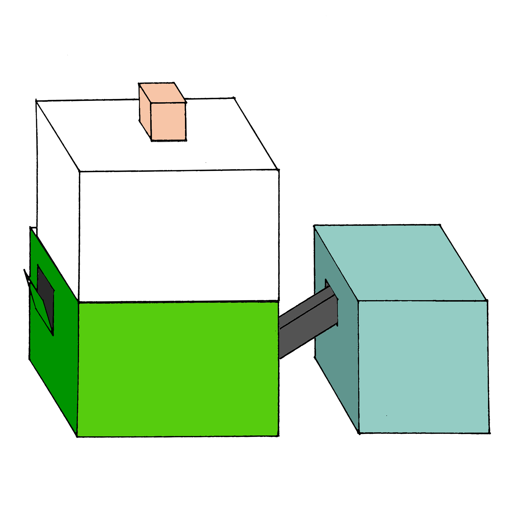

10×10
Momentan sind wir 7,5 Mrd. Menschen auf der Welt.
12% davon müssen Hungern. Etwas
an unserem essverhalten muss sich ändern.
Wie denkt ihr sieht die Zukunft aus wenn wir in ein paar Jahrzehnt 9 mrd Menschen auf der Welt sind.
Für 1 Kg Rindsfleisch werden 10 Kg Futter benötigt, mit der gleichen Menge Futter würden sich aber 9 Kg Insekten produzieren lassen.
10×10
10×10
- Insekten enthalten wertvolle Vitamine, wie A, B und B12.
- Insekten enthalten wertvolles Protein, in Qualität und Menge vergleichbar mit Fisch und Fleisch.
- Gesunde Fette in vergleichbarer Qualität wie Fisch, Avocado oder Nüsse.
- Insekten sind reich an Eisen, Zink, Kalium und Kalzium.
10×10
10×10
Bis zum Jahr 2050 wird ein Bevölkerungswachstum bis 9,7 Mrd. Menschen erwartet.
Bis dahin wird die Fleischindustie komplett überbeansprucht sein und nicht genügend nachhaltig um weiterhin in diesem
Ausmass zu Produzieren.
10×10
10×10
10×10
1 Kg Rindfleisch hat einen Wasserverbrauch von ca. 15.500 Liter. Die Insekten haben im vergleich einen viel kleineren Wasserverbrauch.
10×10
10×10
Hier kommt die Revolution der Lebensmittelindustrie, die Lösung der Probleme der Menschheit.
Die Insektenfarm für Zuhause, züchten Sie ihre eigenen Insekten und kontrollieren Sie selber was ihr Essen isst.
10×10
Insektor
Bestellen Sie jetzt Ihren dreiteiligen Insektor und beginnen Sie noch heute
ihre eigene nachhaltige Proteinquelle zu bewirtschaften.
10×10
Und so funktioniert es:
Die Box 1 besteht aus einer Plexiglasbox ohne Boden und einem kleinen Einsatz oben in der Box, der Brutstätte.
In die Brutstättebox kommen die Larven hin, wo sie sich zu Fliegen verwandeln. Diese fliegen dann in der Plexiglasbox umher und vermehren sich dort.

Die Fliegen legen dann ihre Eier in die kleinen Löcher im Deckel der Box 2, denn aus diesen strömt der Geruch von Essen (Ihren Grünabfällen).
An der Seite der Box 2 befindet sich eine kleine Klappe, diese können Sie nützen um Ihre Grünabfälle den Larven zum essen geben.
Steht bei den Larven die biologische Weiterentwicklung an und sie wollen sich verpuppen, so müssen sie es trocken haben.
aus diesem Grund kriechen sie durch das Verbindungsstück, oben angekommen fallen sie in die Box 3 wo sie geerntet werden können.
Damit die Farm im Fluss bleibt, müssen Sie jeweils wieder 10% der Larven aus Box3 in die Brutstätte zurück geben.
10×10
10×10
10×10
10×10
So sieht der Zusammenbau der Farm aus.

10×10

{kind=link}